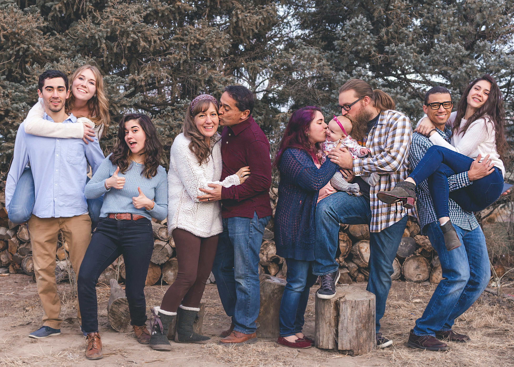

Meet the owners!

Hi we're the owners of this fine establishment made back in 1943! We're a family of 9, including our additional family members, and we care about all things food because we believe thats what brings humanity together! Our grandma and grandpa first started this business after they got married way back when and we're more than happy to carry on their dream! They've always said our receipes should be shared "because nothing this good should be gatekept". Something you should know about us is we are committed to leaving a meaningful impact on your experience with us as we cater to all of your food needs. We know what its like to not want but need an important meal for the day to keep you going and feel positive about the outcome of your day. After all Divine Delights started off pretty rough with our funding and we put everything we had into it, living only on hopes and dreams, and up until recently things started to change for the better. Thanks to the customers that enjoyed our delightful meals. We also decided to donate leftover stock to the homeless and to those in need. We hope to provide a memorable atmosphere when you're here with us whether you're stopping in to pick up a quick meal or if you decided to dine in. We look forward to meeting you!
Wherever you are be sure to stick around for happy hour from 5-6:30pm where our specialty drinks, appetizers, and salads are $5 off! We're best known for our specialty drinks such as the Bees Knees so you don't want to miss it! Wanna know the secrets to our spectactular meals and our family recipes? Email us or ask for Bellford at the front desk!
Return to Homepage:Homepage
Look at our Menu: Preview our Divine Menu